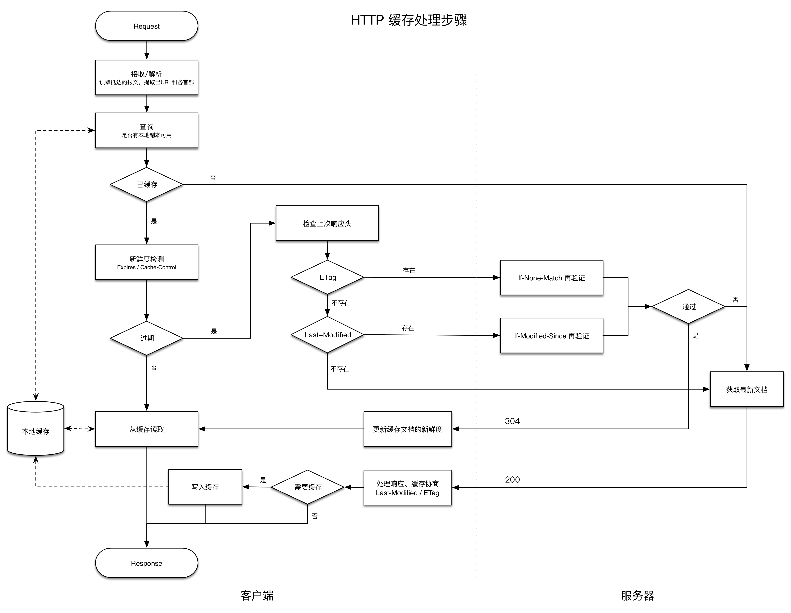

做一下 HTTP 缓存相关知识点的总结。
1. 缓存命中
关于命中的概念如下：
- 缓存命中（cache hit） 用已有的副本为某些到达缓存的请求提供服务。
- 缓存未命中（cache miss） 一些到达缓存的请求由于没有副本可用，而被转发给原始服务器。
- 再验证（revalidation） 原始服务器的内容可能发生变化，缓存要不时检测其副本是否是服务器上最新的副本。
- 再验证命中/缓慢命中（revalidation hit / slow hit） 缓存对其副本进行再验证时， 会向原始服务器发起一个小的再验证请求，如果服务器返回304缓存再次将副本标识为新鲜的。 缓慢命中要比缓存命中慢，比缓存未命中快。
考量命中率主要有两种方式：
- 缓存命中率 由缓存提供服务的请求所占的比例。对现在中等规模的缓存，40%的命中率是合理的。
- 字节命中率 缓存提供的字节在传输的所有字节中所占的比例。
2. 处理过程

3. 再验证
相关的 5 个条件首部：
If-Modified-Since：通过比较过期日期进行再验证。If-None-Match：通过比较实体标签(ETag)进行再验证。If-Unmodified-Since：在进行部分文件的传输时，获取文件的其余部分之前用来确保文件未发生变化。If-Range：支持对不完整文档的缓存。If-Match：用于与Web服务器打交道时的并发控制。
IMS请求：If-Modified-Since 再验证请求。只有自某个日期之后资源发生了变化的时候，IMS请求才会执行：返回新文档给缓存或304，以及新的过期日期。有些Web服务器只是将IMS日期和文档最后修改日期进行字符串比较。
强弱验证器：只要内容发生变化，强验证器就会变化；内容的主要含义发生变化时，弱验证器会变化。服务器会用 W/ 前缀来标识弱验证器。
ETag: W/"v2.6"
If-None-Match: W/"v2.6"
如果服务器回送了一个 ETag ，HTTP1.1客户端就必须使用实体标签验证器。如果服务器只回送一个 Last-Modified 值，客户端就可以使用 If-Modified-Since 验证。如果两种方式都提供，客户端应该使用两种再验证方式。
4. 控制缓存
- Cache-Control: no-store ：禁止缓存对响应进行复制。缓存会像非缓存代理服务器一样，像客户端发送一条 no-store 响应，然后删除对象。
- Cache-Control: no-cache ：响应可以存储在本地缓存区中。只是在与原始服务器进行新鲜度再验证之前，缓存不能将其提供给客户端使用。
- Pragma: no-cache ：兼容HTTP1.0+
Cache-Control: max-age ：从服务器将文档传来之时起，可以认为此文档处于新鲜状态的秒数。
s-maxage表示仅适用于公有缓存。服务器可以将最大使用期设置为 0 ，从而在每次访问时都刷新。Cache-Control: max-age=3600 Cache-Control: s-maxage=3600Expires ：(不推荐使用) 指定实际的过期日期。HTTP设计者后来认为服务器时钟不同步或不正确，
所以最好还是使用剩余秒数来表示过期时间。- Cache-Control: must-revalidate ：缓存在事先没有跟原始服务器进行再验证的情况下，
不能提供对象的陈旧副本。如果缓存进行新鲜度检查时原始服务器不可用，缓存必须返回504错误。 - 试探性过期 ：缓存可以计算出一个试探性最大使用期。LM-Factor算法
附表： Cache-Control
| 指令 | 目的 |
|---|---|
| Cache-Control: max-stale | 缓存可以随意提供过期文件(放松缓存规则) |
| Cache-Control: max-stale=s | 在时间 s 秒内，文档不能过期 |
| Cache-Control: min-fresh=s | 至少在未来 s 秒内文档要保持新鲜(严格规则) |
| Cache-Control: max-age=s | 缓存无法返回缓存时间长于 s 秒的文档(严格规则) |
| Cache-Control: no-cache | 除非资源进行了再验证，否则客户端不接受已缓存的资源 |
| Pragma: no-cache | HTTP/1.0+ 同上 |
| Cache-Control: no-store | 缓存应该尽快从存储器中删除文档的所有痕迹 |
| Cache-Control: only-if-cached | 只有当缓存中有副本存在时，客户端才会获取一份副本 |
主要参考资料：《HTTP权威指南》